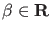

Next: Normal form coefficients Up: Bifurcations of limit cycles Previous: Bifurcations of limit cycles Contents
The location of BPC points in the non-generic situation (i.e. where some symmetry is present) as zeros of the test functions is numerically suspect because no local quadratic convergence can be guaranteed. This difficulty can be avoided by introducing an additional unknown
 and
considering the minimally extended system: